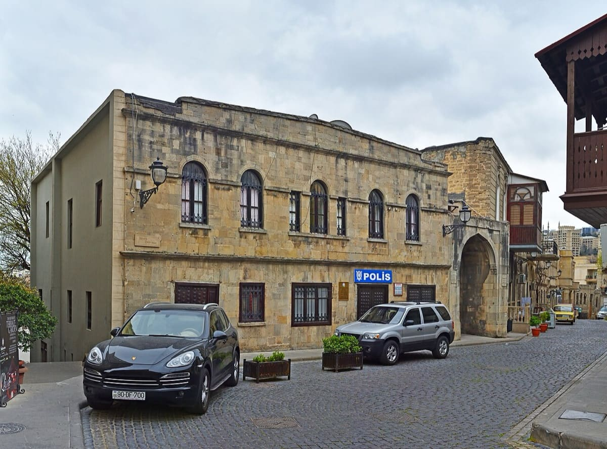
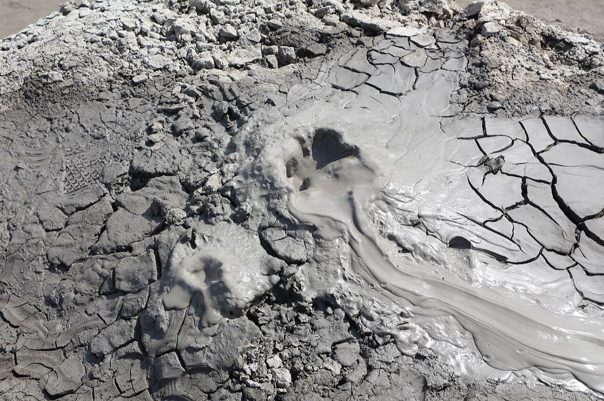
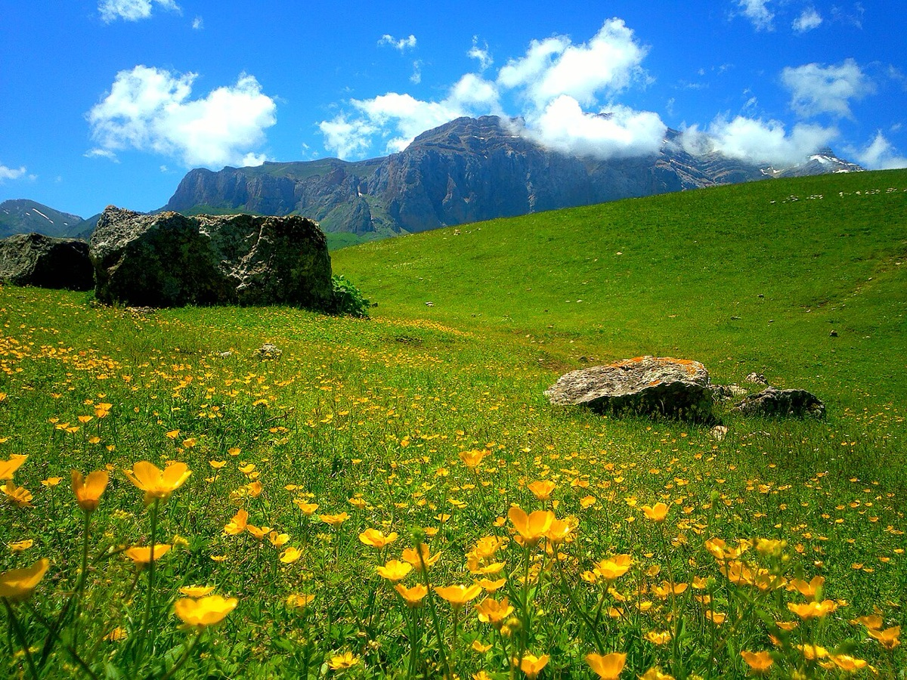
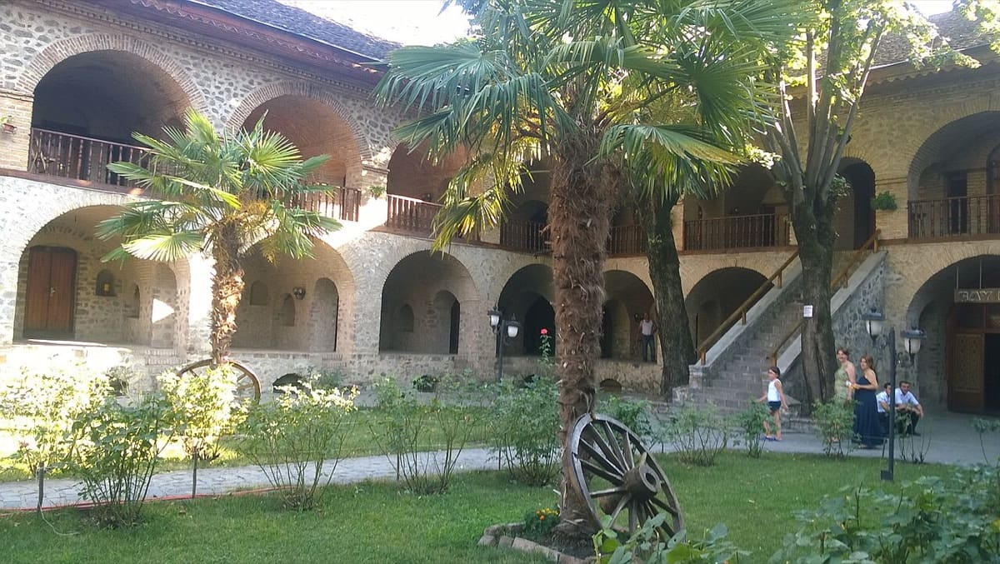
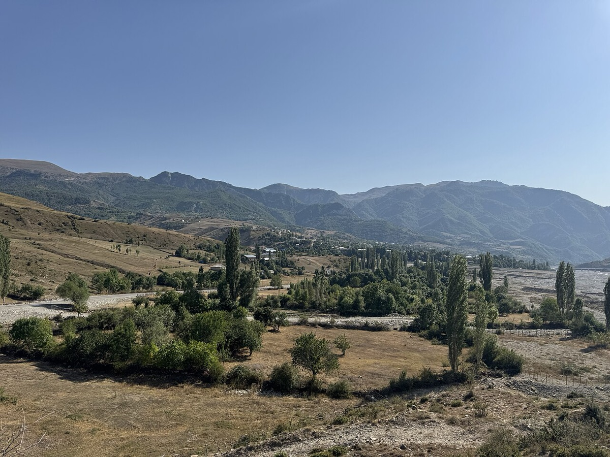
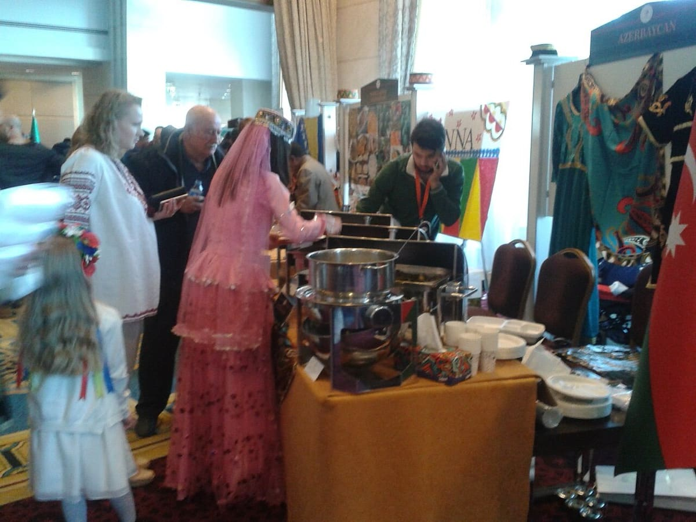

Şəhər turu 3 saat
Bakı & İçərişəhər
Qız qalası, dar küçələr və Xəzər sahili.

Caspian Journeys · Azerbaijan
Yerli bələdçilərlə hazırlanmış fərdi, rahat və unudulmaz səyahətlər.
Populyar istiqamətlər
Bakının daş küçələrindən Qafqaz zirvələrinə — sənə uyğun gələn yeri seç, qalanını biz qurarıq.




Xəritə
Nöqtəyə kliklə və ya klaviatura ilə seç — detallar və təklif olunan vaxt görünəcək.
Niyə Caspian Journeys
Biz standart tur satmırıq. Hər günü sənin ritminə, marağına və rahatlığına görə qururuq.
Neçə günün, büdcən və maraqların əsasında sənə özəl proqram hazırlayırıq.
Bələdçilərimiz şəhərdə doğulub böyüyür — sənə xəritəni deyil, həyatı göstərirlər.
Hava limanı, otel və marşrut arasında bütün hərəkəti biz təşkil edirik.
Səyahət ərzində istənilən vaxt bələdçin və koordinatorun yanındadır.
Qiymətlər
Aşağıdakı məbləğlər bələdçi xidməti və proqram üzrə izahatı əhatə edir. Nəqliyyat və biletlər marşruta görə razılaşdırılır.
Səyahət qurucu
Maraqlarını və gün sayını seç — biz sənə hazır günlük plan çıxaraq.
Seçim etdikcə burada günlük planın görünəcək.
Seçilmiş tur paketi
Bakı, Qobustan və Şəki & Qəbələni bir nəfəsə birləşdirən proqram.
İçərişəhər, Qız qalası, Sahil bulvarı və kulinariya dayanacağı.
Qaya təsvirləri, palçıq vulkanları, Yanar dağ və gün batımı.
Yuxarı Karvansaray, vitrajlar, meşə yolu və ev mətbəxi.
09:30 görüş · 10:00 Qız qalası · 12:00 hamam · 14:00 nahar · 16:00 sahil.
08:00 Qubaya yola çıxış · 10:30 kənd yolu · 13:00 piknik · 16:00 qayıdış.
10:00 bazar · 11:30 ev mətbəxi · 14:00 çay evi · 16:00 desert.
Təcrübələr
Bir səyahətdə bir neçə Azərbaycan — dad, tarix, təbiət, macəra və kadr.

01 · Dad
Plov, dolma, piti və çay — ev sahiblərinin süfrəsində.
02 · Keçmiş
Qala divarları, karvansaraylar və ipək yolu izləri.
03 · Nəfəs
Zirvə havası, meşə səsi və Xəzərin duzu.
04 · Hərəkət
Vulkan yürüşü, dağ yolu və gözlənilməz dayanacaqlar.
05 · Kadr
İşığın ən gözəl olduğu vaxtlarda çəkiliş.
Mövsümlər
Hər fəsil üçün ayrı marşrut və ritm.
Zirvə havası, isti çay və meşə yolu.
Quba bağları, Lahıc və kənd həyatı.
Sərin zirvə, sonra isti sahil.
Üzüm yığını, qəhvə və qızıl işıq.
Komanda
Hər marşrutu öz sahəsini bilən bələdçi aparır.
Şəhər bələdçisi
10 il İçərişəhərdə. İngilis və rus dillərində. Daş küçələrin xəritəsini əzbər bilir.
Region bələdçisi
Qobustan və Abşeron üzrə ekspert. Fotoqrafiya və geologiya sevir.
Dağ marşrutları
Quba, Xınalıq və Şahdağ yollarında 8 il. Təhlükəsizlik və piknik planı onda.
Dad rehberi
Hər regionun öz ləzzəti var — biz onları bir marşruta yığırıq.
Qutab, küçə plovu, çay və şirniyyat.
Piti, halva, baklava və ev şərabı.
Qubalı plovu, quru meyvə və çay.
Mis qabda bişmiş yemək və dağ çayı.
Qısa yürüşlər, kölgə fasilələri, uşaq dostu yeməklər.
Gün batımı, foto seans və özəl nahar.
Sürücü, bələdçi, otel və tədbir koordinasiyası.
Səyahətə hazırlıq
Açılan qutularda praktik məlumatları tap.
Bakıda gün doğumu 06:00–07:30, gün batımı 18:00–19:30. Qobustan və Yanar dağ üçün gün batımı ən yaxşı işıq verir.
Rahat ayaqqabı, günəş kremi, su, yüngül jaket, powerbank və pasport. Dağ marşrutlarında əlavə isti paltar.
Ölkələrin əksəriyyəti üçün ASAN Visa onlayn tətbiqi mövcuddur. Pasport müddəti ən az 6 ay olmalıdır.
Bakı metrosu, taksi və özəl transfer. Region turlarında sürücü və bələdçi birlikdə təşkil olunur.
Dağ yollarında bələdçini izlə, suyu az içmə, yerli adatlara hörmət et, icazəsiz çəkilişdən çəkin.
Rəylər
“Bakıda üç günümüz vardı, amma şəhəri ilk dəfə gördük.”
“Qobustan və Yanar dağ bir günə sığdı, amma heç tələsmədik.”
“Uşaqlarla getdik. Hamı yorulmadan zövq aldı.”
“Şəki karvansarayında çay içdiyimiz anı unutmaram.”
“Lahıcda mis emalatxanasına getdik. Bu, turdan çox mədəniyyət dərsi idi.”
“Şahdağda qar içində çay içmək — bu səyahətin ən sakit anı idi.”
Suallar
Ödəniş, ləğv, uşaq və digər detallar — hamısı burada.
Broşür və marşrut təsdiqləndikdən sonra 30% avans, qalanı isə tur günü nağd və ya kartla ödənilir. Korporativ qonaqlar üçün faktura təqdim edirik.
Gedişdən 7 gün əvvələ qədər avans tam qaytarılır. 3–7 gün arasında 50%, son 48 saatda isə qaytarılmır; bələdçi vaxtını əvvəlcədən ayırdığı üçün.
Bəli. Marşrutu uşağın yaşına görə qısaldır, kölgə fasilələri və uyğun yeməklər əlavə edirik. 0–5 yaş üçün bələdçi xidməti pulsuzdur.
Azərbaycan, ingilis, rus və türk dillərində. Başqa dil üçün əvvəlcədən sorğu göndərin — tərcüməçi təşkil edirik.
Şəhər turlarında piyada və taksi, region turlarında isə sürücülü avtomobil daxildir. VIP transfer ayrı paket kimi də sifariş olunur.
İcazəli bütün məkanlarda çəkiliş sərbəstdir. Muzey və dini obyektlərdə qaydalar fərqli ola bilər; bələdçi hər yerdə xəbərdarlıq edir.
Bizim hekayə
Caspian Journeys 2018-ci ildə Bakıda iki yerli bələdçinin kiçik bir qeyd dəftəri ilə başladı. Bu gün 20-dən çox marşrut, 500-dən çox qonaq və bir əqidə: səyahət siyahı deyil, xatirə olmalıdır.
Qiymət, vaxt və şərtlər əvvəldən aydın.
Hər hekayə bu torpaqda doğulub.
Qonağımızı öz evimizə gəlmiş kimi qarşılayırıq.
Səyahət jurnalı
Qısa yazılar, real məsləhətlər və marşrut ilhamı.
İçərişəhər, sahil və axşam işığı — ideal ilk gün planı.
Marşrutu qurDağ keçidi, karvansaray və vitrajların arxasındakı sənət.
İstiqaməti görPalçıq vulkanları, petroqliflər və gün batımı üçün vaxt.
Xəritədə görVideo hekayələr
Qısa video portretlər — hər biri bir marşrutun xatirəsi.
Başla
Tarixi və maraq dairəni yaz, bir iş günü ərzində sənə özəl marşrut təklif edək.
WhatsApp ilə birbaşa yazMəktub e-poçt proqmanında açıldı. Göndərdikdən sonra bələdçimiz bir iş günü ərzində cavab verəcək.